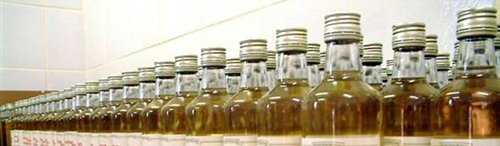

{{page.title}}

Here you will find a list of only the highest scoring rums according to the rum community.
{% capture grade_list %}{% for post in site.posts limit:5 %}{{post.grade}}#{{post.title}}#{{post.url}}~{% endfor %}{% endcapture %}
{% capture grade_list %}{% for post in site.posts limit:5 %}{{post.grade}}~{% endfor %}{% endcapture %}
captured 1: {{grade_list}}
captured 2: {{ grade_list | split:~ }}
captured 3: {{ grade_list | split:~ | sort }}
{% for post in site.posts limit:5 %}
 |
{{ post.title }}, |
{{ post.grade }} / 5 |
{% endfor %}